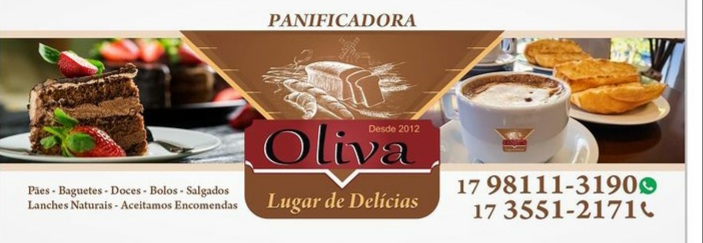

Desafio Curriculo HTML
Meu primeiro contato com HTML. O desafio foi super interessante, um momento mágico para mim, despertou mais interesse em aprender.

Cardapio
Projeto mais desafiador, foi utilizado a linguagem HTML e o CSS.
Projeto ODS
Projeto desenvolvido com varios comandos do HTML e CSS.Os Objetivos de Desenvolvimento Sustentável são um apelo global à ação para acabar com a pobreza, proteger o meio ambiente e o clima e garantir que as pessoas, em todos os lugares, possam desfrutar de paz e de prosperidade. Estes são os objetivos para os quais as Nações Unidas estão contribuindo a fim de que possamos atingir a Agenda 2030 no Brasil.
Jogo do Mario
Projeto um pouco mais complexo para meu nivel de iniciante. Aprendendo sobre Javascript e tentando utilizar essa linguagem.